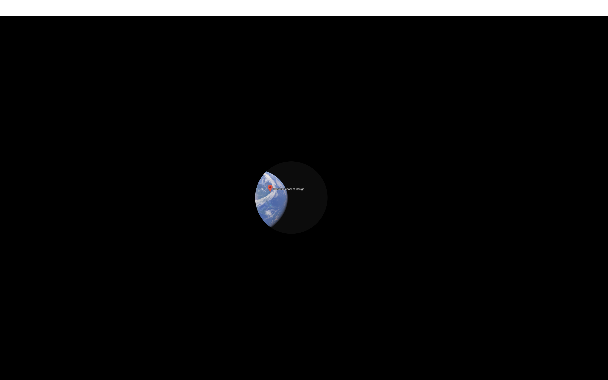

Screenshot Photography: Satellite
- Time: September - December, 2017
- Location: New York, Mountain View, Seattle
- Medium: A Web Page
- Tools Used: Google Earth, TrackingTime, Sketch, Bracket
Screenshot Photography is a documentary that tracked my weekly geographical locations and time consumption on different computer programs during the fall semester of my junior year in college.
Through the entire semester, I have taken screenshots on Google Earth everytime I moved to a different location, i.e. from home to school. At the end of the semester, I then made this webpage of a series of Satellite screenshots.
